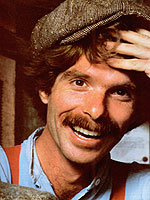

The Plowboy Interview
Every week, the lanky figure of Roy Underhill-better known to the public as the Woodwright-strides onto the television screens of PBS viewers. His popular television series, "The Woodwright's Shop, " has, for nearly five years, been introducing twentieth-century Americans to a more intimate relationship with wood . . . and glorifying the traditional craftsmanship of the days before power tools.
The show debuted in 1981 to critical acclaim and, since then, has been nominated for three daytime Emmy awards. As companion resources to the series, Underhill has written two successful books, The Woodwright's Shop: A Practical Guide to Traditional Woodcraft (in which he tells readers "how to start with a tree and an axe and make one thing after another until you have a house and everything in it") and The Woodwright's Companion: Exploring Traditional Woodcraft (two chapters of which, "The Whetstone Quarry" and "Hurdles," were excerpted in MOTHER NOS. 80 and 81 respectively). He is currently at work on the third volume of the Woodwright's series, scheduled for publication in the fall of 1986, and a fourth book on historical interpretation in a museum environment (the working title of the latter book, Roy says facetiously, is The Whores of Perception). Furthermore, Roy writes a column, "The Old Hand Ways, " for a new bimonthly magazine entitled Wood.
As if his Woodwright-related activities weren't quite enough, Underhill is employed full-time at Colonial Williamsburg in Virginia, where he is the master housewright in charge of the Carpenter's Yard. And somehow, between writing books, filming TV shows, answering the ever-jangling phone, and making dozens of speeches and personal appearances, he finds the time to be a family man. He and his wife, lane, have two daughters, Rachel, six, and Eleanor, four. Roy dedicated his second book to Yane, a talented actress, noting her accommodation of his burgeoning career in the inscription, which reads, "To Jane: Broadway's loss is our gain."
An individual of less substance would have been overwhelmed by such a grueling schedule and been satisfied to become a mere celebrity. But not Underhill: He feels that there's more to being the Woodwright than just filming the TV show. First and foremost, Roy views himself as an experimental historian. In his daily work at Williamsburg (which he refers to as a land-bound Kon-Tiki), he regularly discovers fragments of information that help fill the gaps that exist in the overall knowledge of eighteenth-century life and craftsmanship. Second, Roy is a communicator. And his communications skills are vital to his work, enabling him to chronicle and preserve accurately the historical discoveries he makes.
Staff member Pamela Phillips and photographers Jack Green and Steve Keull visited with Underhill on two occasions, once at his work site in Colonial Williamsburg and again on the set of the PBS affiliate in Raleigh, North Carolina, where Roy films "The Woodwright's Shop." With candor and wicked wit (often self-directed), Underhill discussed his unusual occupation and its relevance to contemporary Americans, who, he admits, are frequently better acquainted with a chain saw than an ax. However, in addition to containing entertaining commentary on woodhand tools, and appropriate technology-subjects on which Roy can discourse for extended periods of time-this Plowboy interview provides refreshing reinforcement of the American dream. Underhill is undeniable proof that people who work hard and believe in themselves can still make an excellent living doing something they enjoy.
PLOWBOY: How did you become the Woodwright? In the beginning, you couldn't foresee where your love of traditional skills would lead, could you?
UNDERHILL: I'd like to think I did know where it would lead. In one way or another, you see, I've always been doing what I'm doing now. I grew up in Washington, D.C., and my older sister worked at the Smithsonian Institution researching early American life and American history, so I was exposed to those subjects through her. I was aware that people could make an occupation of uncovering information on how men and women lived in the past and how they supported themselves. And my whole family was science-oriented; I always knew it as a discipline.
Even as a little kid, I was continually making things, and I remember my sister showing me how to fashion willow whistles, or toys out of cigar boxes. Those things were all very important to me, not just forms of frivolity. Anyway, wanting to create with my hands has always been with me; I always knew that this was what I wanted to do.
The teaching instinct-and teaching's what I value the most-has always been a part of me, too. When I was 12 years old or so, as I worked in my little shop down in the basement of our house, I'd pretend I was instructing a class, explaining every step I was taking.
PLOWBOY: How did you zero in on your specialty, early American woodworking?
UNDERHILL: That came later. When I was in high school, I moved into higher technology and was very involved with electronics and did some work on infrared image converters and other things used in night-vision technology. Also, when skateboards were first popular, I made one with rocket engines on it-two electrically fired, zinc-sulfur rockets. My friends and I decided to try it out-keep in mind, now, this is the middle of Washington, D.C.-and it exploded. The rockets flew off, and one of them wrecked the wheel of a car parked nearby. The other one shot off somewhere into suburbia. I just barely escaped with my life.
Thomas Edison was one of my childhood idols. But even at that time I was slowly formulating a conclusion that I still hold: It's hard for today's individual to be creative and inventive in the way Edison was. Nowadays, a person can't say, "I'm going to invent the light bulb." It takes tremendous research facilities to do that sort of thing.
PLOWBOY: But didn't Edison have a huge research warehouse and lots of technicians working for him?
UNDERHILL: It came to that later on in his career, and it illustrates the point I'm trying to make: At some point I decided that I couldn't accomplish anything significant in higher technology without working as part of a big research facility. But I wanted to invent by myself; I like to work on things by myself. When I started looking to the past, I thought that it would have been easier then for someone-a lone person-to make a contribution. So I started searching for my place in the past. Now I work at Williamsburg, and worldwide, with hundreds of other researchers in dozens of disciplines. I think the real reason I chose this specialty was to avoid having to convert to the metric system. I could keep on thinking in cubits, inches, and feet.
PLOWBOY: Did your formal education prepare you for a career as the Woodwright?
UNDERHILL: Well, I'd been reading about various technologies all along and doing my own little projects as I've mentioned. After high school I went to the University of North Carolina at Chapel Hill, and through the theater department became interested in directing. I think the reason I went into directing was that I knew I wanted to communicate what I'd been learning. It was a terribly creative time, very exciting. I learned a lot about the technical end of my craft and did quite a bit of hands-on work designing and building sets. I eventually got a B.F.A. in theater direction.
PLOWBOY: And then what?
UNDERHILL: Well, I should mention that all this was happening about the time THE Mother Earth News and The Whole Earth Catalog were getting started. After I graduated from college, I decided to do the whole back-to-the-land thing. I moved out to Colorado and lived at the foot of Cheyenne Mountain, which is the NORAD (North American Air Defense Command) site near Colorado Springs. It's literally a hollow mountain containing nine buildings and a barbershop. Supposedly, after Armageddon, all the people who had sheltered themselves inside could walk out. Later on, I moved south to El Rito, New Mexico, where Peter van Dresser lived. [EDITOR'S NOTE: For more information about van Dresser, a pioneer in self-sufficiency, refer to the Plowboy Interview in issue 35.]By the time I arrived there, van Dresser had just about had it with unprepared young couples coming out and saying, "Oh yes, where is this wonderful land I can homestead? How can I make it happen for me?" He was incredibly sick of naive young people moving out there expecting to emulate his lifestyle.
Of course, there were many popular reference sources, including MOTHER, that emphasized the rewards of homesteading and selfsufficiency, but they never said it was easy. It was really interesting to see the disparity between real life and the popular mythology that evolved from all that was happening about this time.
PLOWBOY: Do you think of your time spent during this period as a waste?
UNDERHILL: No, not at all. I learned a lot. I decided I wanted to live my life without power tools, which was wise, considering that I was living in an isolated spot, way up in the mountains, and there wasn't a power line for miles. We lived in a tipi for about two years, and then we built what was essentially a hogan it had several tiers; I suppose you'd call it a hybrid hogan-on the top of the mountain. During the whole time I lived out there I never used a chain saw, and still I heated with wood and built houses.
PLOWBOY: How did you do that?
UNDERHILL: Well, to be honest, I had a case of dynamite I used to blast the cellar holes.
PLOWBOY: Dynamite?
UNDERHILL: Explosives seem to suit my personality. Dynamite works really well, and it's loud. I suppose I considered it to be a kind of uncivil, but appropriate, technology.
Despite such occasional excesses, though, I learned that if I wanted to accomplish something, I had to do it with muscle power. Therefore, I became more and more interested in human-powered equipment, like pedal lathes and other nonelectric devices. But there are very few people who can muster the incredible dedication that kind of lifestyle requires.
PLOWBOY: You're making the experience sound negative.
UNDERHILL: But it wasn't! It was fun to be able to have that freedom, to be creative like that. I cherish the experience.
PLOWBOY: What happened to change your direction?
UNDERHILL: Well, Jane and I gave it a really good try. We built houses on mountaintops with solar showers. We kept bees and raised goats. Eventually, instead of asking myself, "What am I accomplishing here?" I started saying, "I'm not accomplishing much more than keeping myself fit!"
Also, as many of your readers know, it's difficult to earn a living under such circumstances. Some of our neighbors were able to make and sell handicrafts, but that's hard to do when you're homesteading full-time. Truthfully, the only people I knew who were making a really decent living in the mountains of New Mexico-people who weren't essentially living on welfare or food stamps-were those who were writing articles on homestead technology!
PLOWBOY: I take it that you decided to head back east at this point?
UNDERHILL: Right. I felt like a sellout when I did it, but I also felt I had to start getting ahead. I looked around at what I could do and eventually went into the graduate school of forestry at Duke University in Durham, North Carolina, to get a master's degree. I had very supportive professors who encouraged me to pursue the relationships between people and resources; for me in forestry school, this translated to the history of people and trees. It's exactly what I'm doing now. I put together a multidisciplinary course of study, ranging from basic anthropology to history, engineering, and forestry.
PLOWBOY: How did your studies at Duke influence your thinking?
UNDERHILL: I came to the realization that working with wood is a fundamental human experience. Homo sapiens and hardwood trees appeared on Earth at about the same time, and the essential connection between man and wood dates back to when our ancestors were swinging in trees; they developed an intuitive knowledge of how strong the next branch would be. Present-day analytical faculties and motorcoordination skills are inherited capabilities based on innumerable generations of humans working with wood and other natural materials. I believe that most of us have an instinctive feel for shaping wood into useful items, and that when we cultivate this ability, it develops our confidence in our senses and increases our understanding of how we relate to the material world.
PLOWBOY: While you were pursuing your graduate work, then, did you find a way to communicate these concepts?
UNDERHILL: Yes. I started teaching people-right in my own backyard down by the Eno River in Hillsborough-how to work with wood. I held workshops and consulted with small museums that wanted to set up programs in traditional woodworking. I advertised in museum journals, "Have broadax, will travel," to get jobs.
PLOWBOY: The Eno River? That's where the woodwright's shop, the one featured in the opening of your television program, is located, right?
UNDERHILL: Yes, that's the shop. The original one is located at West Point on the Eno, a historic site near Durham, North Carolina. In 1975 I'd managed to scrape enough capital together to open a place where I could work and teach. I'd wanted to purchase one particular crudely built blacksmith shop-it dated from 1900 or so-and was negotiating to get it. In fact, I'd already started rebuilding the shop when the deal fell through. The place was sold out from under me; it was eventually torn down, and a fast-food drive-in was built on the site. I was heartbroken.
PLOWBOY: That was one of your darkest hours?
UNDERHILL: Oh, I had a lot of false starts; there were some disappointing times and many dark hours. But then I found a partner who wanted me to build a blacksmith shop. He'd gotten started, but progress had pretty much come to a standstill. I agreed to take over the project, build the shop, equip it, and run it. So I just advertised, offering some classes in timber-framing . . .
PLOWBOY:. . . and people showed up and helped you build it, right?
UNDERHILL: Right. It was a wonderful experience. A lot of those who helped still feel a part of that building. Well, we got the shop going and I started teaching how to make rakes and shovels and rocking chairs and so forth. The teaching was going great, but still it was sometimes scary. It can be a worrisome thing when you've got a dozen people flailing the air with axes all at once.
About this time-during 1976, I guess-I started thinking about doing a television series to present the skills I was teaching: how to make useful items from wood without power equipment. Also, a bit later, my first daughter was born and I decided I had to do more than teach and make wooden rakes that sold for $12 each. I was starting a family; it was time to get serious. So I started trying to make connections with people in television.
PLOWBOY: Because of your theater work, you weren't entirely a novice in TV, were you?
UNDERHILL: No, I did have some background. I'd even talked several times to the folks at the PBS affiliate in Chapel Hill, but my ideas just hadn't hit at the right time. At this point, though, I decided the moment for the final pitch had come. I made an appointment with the program director and went in there wearing my hat-the one you see me wear on the show-and my red suspenders. I had rakes and shovels and chairs I'd made draped all over me, and I carried an ax and a toolbox. I'd tried this tactic before when I'd tried to get other jobs, and sometimes it had worked.
Well, I walked in and plopped down in front of the program director's desk. I said I had a TV series ready to go. I said, "You want to do `The Woodwright's Shop'. . . if you don't, somebody else will." And as a result they came out and shot a pilot show with me at my shop.
However, I didn't hear anything for a long time.
PLOWBOY: So you'd given it your best shot, and it seemed as if there'd be no TV show. What was your backup plan?
UNDERHILL: In the meantime, I'd written to the Colonial Williamsburg Foundation in Virginia. They'd previously asked me whether I'd be interested in starting a traditional housewrighting program up there. But I didn't hear from them for a long time either. I was getting more and more desperate.
PLOWBOY: Since you're now on television and employed by Colonial Williamsburg, things obviously came around. How did that happen?
UNDERHILL: It was spring, and my bees had started to swarm. I was losing my hives, and I knew I had to go out and get them. I ended up climbing high in this box elder tree to catch a swarm-something I'd never done before. It was a real low point; I thought I might just have to give up. I sat there in the tree and said to myself, "The bees are gone . . . I'm going to have to stop doing what I want to do . . . I've got to give up dreaming about what I want to do and find some kind of profession that society values."
To make a long story short, I caught the swarm, got down from the tree, and managed to climb down the ladder with all these honeybees, thinking all the while, "I could fall and get stung to death." But I managed to get them back in the hive.
PLOWBOY: All right!
UNDERHILL: Yeah, I felt so good about that accomplishment that I had a beer. Now I usually don't drink . . . but it was a hot day, and I'd conquered the bees, and we had some people over, so I drank a beer.
Then the phone rang, and it was the TV station. The pilot had gone over like gangbusters with the national PBS network. They were ready to start filming it. I said great.
I don't remember whether I had another beer or not, but I was so excited I probably did. Then ten minutes later, Colonial Williamsburg called, saying they wanted me to start work as soon as I could. Within half an hour, I'd gone from the bottom to the top. So that's my message to your readers.
PLOWBOY: When you're feeling low, go sit in the top of a box elder?
UNDERHILL: Well, a box elder or an oak. Perhaps the message is that if you can survive a swarm of bees, things are sure to turn out right. Actually, I suppose I mean that good things happen to you when you're ready to handle them. Maybe the times before when I'd gone into the network and said, "Do I have a TV show for you!" I wasn't really ready for it. As it was, I was just barely ready for the show when it happened.
Anyway, I started building the housewright program at Williamsburg and working on the TV series at the same time. So I've spent the past five years going back and forth between centuries: the eighteenth and nineteenth centuries for my work at Williamsburg and the projects I'm demonstrating on the show, and the twentieth century when I'm dealing with publishers, TV cameras, and contracts.
PLOWBOY: How is your show put together?
UNDERHILL: I work out what I'm going to do beforehand, sometimes only the night before, since we're on a really tight schedule. I walk through the show by myself, block out the camera shots, and set the tools down where I want them. There's no script-I have what I want to say in my head-but I place the tools so that there is a natural progression. I walk from one tool to the next and hope I'll wind up in the right place, having said everything I needed to say. Then, the crew brings the cameras in and sets up everything. I run through my moves and monologue so they can line up their camera angles. Meanwhile, Geary Morton, the director, makes some adjustments and shows me which camera will be doing the close-ups.
PLOWBOY: It must be difficult to keep camera positions in mind when you're trying to explain how to build an eighteenth-century toy with hand tools.
UNDERHILL: It really is. Sometimes I wonder how we made it through that first year. It was just bananas! A lot of things went wrong at first. Actually, I think it's an incredible feat whenever we get a show to turn out right-to get all the equipment to work for 26 minutes and 27 seconds and, at the same time, for me not to mess up my part.
PLOWBOY: Tell us about the time you gashed your hand on the show and started bleeding all over the place.
UNDERHILL (moaning): It was one of those shows where everything was going wrong. First, let me explain that unlike most TV shows, "The Woodwright's Shop" is not edited; it's shot at one whack in its entirety. Because of our tight shooting schedule, the most takes we do is three. Sometimes when I seem kind of breathless on the show, it's because it's the third time in a row I've done it. So, if I'm going to be demonstrating with expendable materials, I bring three of each item needed. In the show you referred to, I was planning to split a log, so I came prepared with three that I felt pretty sure would split the way I wanted them to.
On the show in question, we'd already blown two takes. A microphone came off the first time we tried to tape, and something else flubbed up the next time. During those two takes, I'd already used up two of the logs I'd brought. So here I was, down to my last log. And since the equipment and crew were already set up, I couldn't say, "Well, things aren't going so hot . . . let's do it another day." That third log just had to be it.
Well, the tape was rolling and I was explaining what I was doing, while chopping away with the hatchet. I saw some blood on the hatchet and looked down. Sure enough, there was blood gushing out of my hand.
PLOWBOY: What was going through your head then?
UNDERHILL: I just kept talking, praying that Geary, the director, wouldn't become alarmed enough to quit shooting. He saw that I was OK and kept the cameras rolling. Afterwards, when the staff was reviewing the tape to see what we'd got, the sliced-open finger was the biggest attraction. I'm glad they taped it because I think that lots of viewers remembered the show where some guy cut himself and bled on TV, and those people tuned back in, probably to see what other damage I could do to myself. Seriously, though, the show most likely worked in our favor, because it added some realism and credibility.
PLOWBOY: Have there been other near misses on the show?
UNDERHILL: There was the log cabin disaster . . . well, maybe not a disaster, just a mishap. On that show, I'd finished constructing the perfect cabin joint and I said, "Well, we've got a few seconds left, folks, so I'll trim this up and show you how tight I can get it." I made a wrong swing with the ax, and-pop!-broke the whole joint off. We had only one cabin ready, so we couldn't film it again. I stood there a few seconds looking at what I'd done, then said, "Well, that's it, see you again next week."
PLOWBOY: You mentioned before that it seems as if you're constantly traveling between centuries. You must really feel like a time traveler when you leave Williamsburg to tape your TV show.
UNDERHILL: Sometimes. However, the feature that I think makes the show interesting to me-and something that I try always to incorporate-is that "The Woodwright's Shop" could be out of the past or it could be in the future; it could be either one. And it's now, too. There's a tremendous overlap between history and appropriate technology, and I try not to separate the two. The history of appropriate technology is the history of human development, and vice versa. They're totally interlinked, at least during the phase of history I'm into.
PLOWBOY: How do your books fit into all of this?
UNDERHILL: I use the books as a way to tie up the loose ends that may have been left dangling from the series. In the books I can explain other methods of building a particular project-variations that will accomplish the same thing. In the series and the books, I've tried to begin with wood and basic implements and to add some new tools and different woodworking techniques as we go along. The first book, you may remember, started with a few people with access to some trees and went from there. Those folks had the potential to build a house.
PLOWBOY: When you were teaching workshops, you had pupils. Now you have fans. How have you dealt with your growing public recognition?
UNDERHILL: I get lots of mail. Most of it's just pleasant: Someone likes the show and sits down to write. That makes me feel good because "The Woodwright's Shop" is the kind of show I'd like to see on TV and that's what I'm keeping in mind when I do it. Lots of other people write wanting to know where they can get more information on woodworking or where they can find tools. I even got a letter from a man in San Quentin Prison who asked me to please send him a drawknife and a file. I suppose he has trouble getting good tools!
Some people will send me pictures of things they've made, inspired by what they've seen on the show. Others tell me about old woodworking tools and send me photos. And some will send me pictures of machines they've designed and tell me about their experiences. And such letters are, of course, the greatest rewards that I could possibly ask for. Something on the show worked, and the people who saw it knew they could do the same sort of thing!
The letters I like best, though, are those that add to our historical knowledge of woodworking, which-you must bear in mind-is very imprecise. Other times, people will share interesting tool-related stories when stopping by the Carpenter's Yard at Williamsburg. This one man, with a very thick European accent, was looking at the pit saw, which is a setup where a large log is sawed into boards by two workers using a crosscut saw; one person is on top of the log, and the other works down in the pit. This fellow had worked with a pit saw in a labor camp in Poland during World War II. He said they ate lichen off the logs in order to survive, and many of them died.
PLOWBOY: You say our historic knowledge of woodworking and other common crafts is incomplete. In what ways?
UNDERHILL: I think that we have an overly romantic view of anyone who does anything by hand. That's one reason, of course, for the current popularity of handicrafts. Objects made by hand that have survived from several hundred years ago are regarded as masterpieces.
But I can show you one tool in my collection that survived intact because it didn't work at all. It's a scorp for hollowing out the inside of a wooden bowl. It's hard to handle and gets in the way when you actually shart shaping the bowl. This tool is still around today, in mint condition, simply because nobody could use it.
Basically, the men and women who were creating objects in the seventeenth and eighteenth centuries in Williamsburg or anywhere else weren't producing masterpieces. They were in their business to earn a living. Their craft was their survival. In most cases, people didn't choose an occupation because of some deep love for the craft, though their surviving work does reflect care and attention.
Also, museums collect and exhibit what might be considered the best craftwork of past ages. Fine objects tend to survive. We know very little, for instance, about harnesses, or barrels and other staved objects, or pottery and earthenware. Items subjected to everyday use wore out. In most cases, we can't say that a handmade barrel was definitely crafted in 1750 or 1775 or even 1830. However, we can notice differences in barrels made before and after the introduction of machinery for manufacturing these objects.
Finally, the surviving sources we do have concerning seventeenthand eighteenth-century crafts detail what we call the fine trades. There is little evidence remaining about crude extractive processes such as logging, tar burning, pit sawing, or burning oyster shells for mortar making. We simply don't know much. In our work at Williamsburg, we're sometimes able to figure out pieces of the puzzle by re-creating these trades.
PLOWBOY: When you say surviving sources on seventeenth- and eighteenth-century trades, I assume you're referring to books. In what ways are these resources flawed or misleading?
UNDERHILL: Sometimes when you read a book about a specific trade, there'll be pieces of the process left unexplained . . . or maybe you'll misinterpret what has been written. Then you'll start actually making the object, and the author's failing or your own becomes obvious.
We often tend to explain material culture in the light of our own field of expertise. We'll say that a long-ago craftsman constructed a wall in a certain way because of the prevailing cultural patterns. Often this will turn out to be true; other times, it'll simply be that he found out that if he didn't construct a wall in that manner it would fall down.
It's hard to make generalizations about the craftwork of the past. Even today we can't answer the questions "How long does it take to build a house? How many workers?" The questions are too generalized to answer. There are random influences on any project-the local economy, the raw materials available, the skill of the laborers, and the talents of the designer-past or present.
I sometimes fear that one of the negative aspects of "The Woodwright's Shop," and of my books, is that I may be helping people to make generalizations about the past. I'll say something on the show, and people will take it as fact instead of challenging it and researching it.
PLOWBOY: What exactly do you mean?
UNDERHILL: A specific example would be regional variations in methods of working with wood and even in the names of the tools used. For example, that bench over there is called a schnitzel bank by the Pennsylvania Dutch. If you were English, you'd refer to it as a drawbreak. For simplicity's sake, I may refer to a tool used on the show by its most commonly used name. I have this moral dilemma whether to do this on the show, for fear that the other names may be lost in the future.
PLOWBOY: Considering the array of power tools on the market, are you ever tempted to update your approach to woodworking?
UNDERHILL: I'll admit that it's sometimes difficult to divorce myself from contemporary knowledge when re-creating the past. Say, for instance, I'm working in the Carpenter's Yard and we're constructing a joint. Nowadays, we know that if you construct a joint in a certain way it will bear a specific load. We have reliable stress tables that give us this information. But we can't use those sources. We have to build the joint the way it was done at a certain time in a certain town, even though we know this may not be the best way to do it.
These difficulties aside, though, I'm never really tempted to put my work-or the show-in a more modern context. At some point, I made the decision to present my craft just the way it was, in its classical form. I serve my purposes better if I leave the updating to others. Classical woodworking is not the kind of technology that comes and goes; it never becomes dated, or changes and becomes obsolete. It will always be there as long as there are trees and metal and muscles.
Furthermore, historic craftwork-without the so-called modern improvements-is really quite sophisticated. Using a hand tool, you can often accomplish a task in one-tenth the time it would take using a seemingly superior modern tool or technique. Consider the ax. It's phenomenal, just amazing, what you can do with an ax.
PLOWBOY: To what do you attribute the growing interest in hand work and natural materials?
UNDERHILL: I think it's a reaction to synthetic materials. The more we use synthetics, the more we come to value traditional materials. Wood and hand tools have now become almost luxury items.
PLOWBOY: Are there any specific books that you think would be especially helpful to either beginning or advanced woodworkers?
UNDERHILL: I always recommend the classics. A lot of good resources are, of course, being added to the field, but the great references are Henry C. Mercer's Ancient Carpenter's Tools, and Joseph Moxon's Mechanick Exercises; or, The Doctrine of Handiworks as Applied to the Arts of Smithing, joinery, Carpentry, Blacksmithing, and Bricklaying. Particularly good is the chapter in the back on sundial repair.
PLOWBOY: Sundial repair?
UNDERHILL: It'll tell you everything you need to know. It's a classic.
PLOWBOY: Are there any other books that you value?
UNDERHILL: I think many of the best original sources came from Britain. They're older books, and sometimes you have to look hard to find them. The Wheelwright's Shop-the name of which obviously inspired me a lot-was written by George Sturt. Young George was off at college, and his father-who ran a wheelwright shop in a village-became sick, so George had to go home and take care of the business. Later on, George, who was a very well educated man, wrote a wonderful recollection of his days in the shop.
And while we're on this subject, I should tell you that woodwright is a completely made-up term. There's no such thing as a woodwright. I was trying to name the TV show, and so I invented the word woodwright, but I thought, "I can't name the show that." Well, I did, and the name seems to have caught on.
PLOWBOY: So you coined a new word.
UNDERHILL: Now I've even seen woodwright in print. I saw it in Smithsonian magazine the other day.
But let's get back to books. The Village Carpenter, by Walter Rose, is excellent. Another one that I admired just for its plain-spoken language is the first edition of Audel's Carpenter's and Builder's Guide.
Then there are the COSIRA books, which are put out by Britain's Council for Small Industries in Rural Areas. (I know it sounds unhelpful recommending these hard-to-find books, but they're the ones that have done the most for me.) Britain is way ahead of us in documenting these skills, and they do a good job with this series of books. The volume on blacksmithing is great; it's very clear and explains the whole process step-by-step.
One scholarly book that is commonly available-it's been out for a while-is With Hammer in Hand, by Charles Hummel. It's very good.
PLOWBOY: How about people who are interested in hand tools? Where can they get more information on obtaining and using them?
UNDERHILL: You know, tool collecting is a big business. Lots of people make a living buying old tools at flea markets and swap meets and reselling them.
There are two tool-related groups I can recommend. One-the Early American Industries Association-is quite scholarly in focus; it was founded here in Williamsburg in the 1920s to preserve the terminology, the knowledge, the tools, and, in general, every aspect of the industries of early America. The other group is the Midwest Tool Collectors' Association (MWTCA). Both are nonprofit organizations that provide helpful services. The journals they publish are great . . . and, through these publications, you can get in touch with fellow collectors and dealers who can usually help you find the tools you want. Also, these groups have book-search services, which help folks locate some of the references I've mentioned.
PLOWBOY: It seems as if, through your work, you've created a career where none existed before. How do you advise individuals who ask how they, too, can create a career around things that they love?
UNDERHILL: I've found the best path for most people is to just start working in their chosen field on whatever scale they can, wherever they can. If it suits their needs, they can attend a college, technical school, or museum program where they can hone their skills. One man I work with at Williamsburg got his start in historic restoration by repairing antique furniture.
The next step is to start sharing your skills and knowledge. Being able to communicate is a vital skill; at least half of the work I do is some form of communicating. There are workshops, teaching, interviews with the local media, demonstrations at fairs, and talks given to civic clubs. All these experiences add to a craftsperson's credibility and portfolio, and give him or her a better chance of finding a satisfying job. It also gives the person a better chance to learn from others.
Finally, it's important to remember that a career is built one step at a time. The path has to start somewhere, and quite possibly not with a job that's terribly exciting. A person can't expect to land the big one at the beginning. While building a reputation takes time and effort, the craftsperson's reward is to be able to continue working with his or her hands-to be able to practice a trade for its own sake.
PLOWBOY: Are you totally down on new technology?
UNDERHILL: Not at all. I keep two computers busy all the time. When one is on data base work looking for patterns in the behavior of colonial craftsmen, the other is developing interactive simulations of adventures in early American environments. They give me a great break from the daily grind of "wacking and yacking."
PLOWBOY: So when computer programmers go home looking forward to a relaxing evening of hand woodworking, you, who spend every day working with an ax or a drawknife, can't wait to get home to the keyboard. What's in store for the Woodwright?
UNDERHILL: I love doing the show, and I plan to keep on with it. I've got several new books in the works, two of which are due out next fall. I'm working on a new journal of historic trades. Colonial Williamsburg has just invested in a mobile video unit, and we're developing new shows about our work there. Meanwhile, back at my regular job, I've got five apprentices to see through to their journeyman papers and about 187 buildings to reconstruct in the historic area.
PLOWBOY: When do you rest?
UNDERHILL: Rest?
EDITOR'S NOTE: Roy Underhill's books,The Woodwright's Shop (published by the University of North Carolina Press, 1981) and The Woodwright's Companion (University of North Carolina Press, 1983), are available in libraries or may be purchased from Mother's Bookshelf, P. O. Box 70, Hendersonville, NC 28793, for $12.95 apiece, plus $1.98 shipping and handling.
His show, "The Woodwright's Shop,"appears on many PBS stations across the country. Check a local television schedule for viewing times.
Many of the old trade books mentioned above are available from the Early American Industries Association. This nonprofit organization can be contacted by writing Mr. John S. Watson, Treasurer, EAIA, P.O. Box 2128, Empire State Plaza Station, Albany, NY 12220. The Midwest Tool Collectors' Association can be contacted by writing Tom Ward, P.O. Box 11, Avondale Estates, GA 30002.
Two chapters of Roy's book The Woodwright's Companion: Exploring Traditional Woodcraft have been excerpted in MOTHER. "The Whetstone Quarry" can be found in issue 80, and "Hurdles" appears in issue 81. For information on ordering back issues, please turn to page 132.
|
 |
|
|